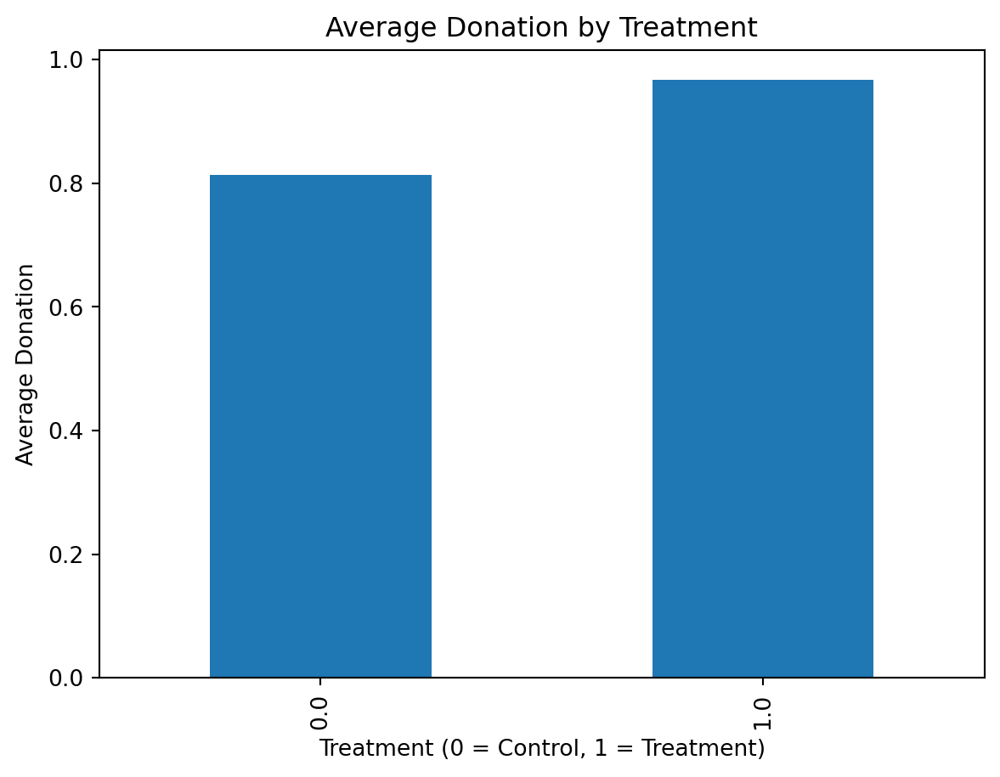

import pandas as pd
df = pd.read_stata('/home/jovyan/git/rsm-gh-assignment-practice/495/week2/week3/AERtables1-5.dta')
df.groupby("treatment")["gave"].mean()treatment
0.0 0.017858
1.0 0.022039
Name: gave, dtype: float32Yirui Xu
April 22, 2026
This paper studies whether matching donations increase charitable giving. Karlan and List (2007) conduct a large-scale field experiment in which donors are randomly assigned to either receive a matching offer (treatment group) or not (control group). The goal is to examine whether such incentives affect donation behavior.
I replicate key findings from Table 2A of the paper using the provided dataset.
treatment
0.0 0.017858
1.0 0.022039
Name: gave, dtype: float32The results show that the treatment group has a higher probability of donating compared to the control group.
treatment
0.0 0.813268
1.0 0.966873
Name: amount, dtype: float32The average donation amount is higher in the treatment group.
treatment
0.0 45.540268
1.0 43.871876
Name: amount, dtype: float32Conditional on giving, the donation amounts are similar across groups.
OLS Regression Results
==============================================================================
Dep. Variable: gave R-squared: 0.000
Model: OLS Adj. R-squared: 0.000
Method: Least Squares F-statistic: 9.618
Date: Wed, 22 Apr 2026 Prob (F-statistic): 0.00193
Time: 21:09:50 Log-Likelihood: 26630.
No. Observations: 50083 AIC: -5.326e+04
Df Residuals: 50081 BIC: -5.324e+04
Df Model: 1
Covariance Type: nonrobust
==============================================================================
coef std err t P>|t| [0.025 0.975]
------------------------------------------------------------------------------
Intercept 0.0179 0.001 16.225 0.000 0.016 0.020
treatment 0.0042 0.001 3.101 0.002 0.002 0.007
==============================================================================
Omnibus: 59814.280 Durbin-Watson: 1.997
Prob(Omnibus): 0.000 Jarque-Bera (JB): 4317152.727
Skew: 6.740 Prob(JB): 0.00
Kurtosis: 46.440 Cond. No. 3.23
==============================================================================
Notes:
[1] Standard Errors assume that the covariance matrix of the errors is correctly specified.The regression results show that the treatment effect is positive and statistically significant, indicating that receiving a matching offer increases the likelihood of donating.

The figure shows that individuals in the treatment group donate more on average than those in the control group.
The results confirm the main findings of Karlan and List (2007). Matching donations increase both the probability of giving and the overall amount raised. However, conditional on giving, the donation size does not increase significantly.